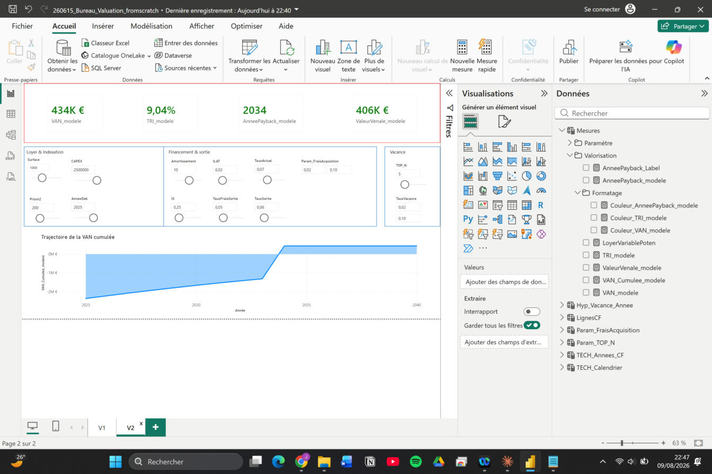
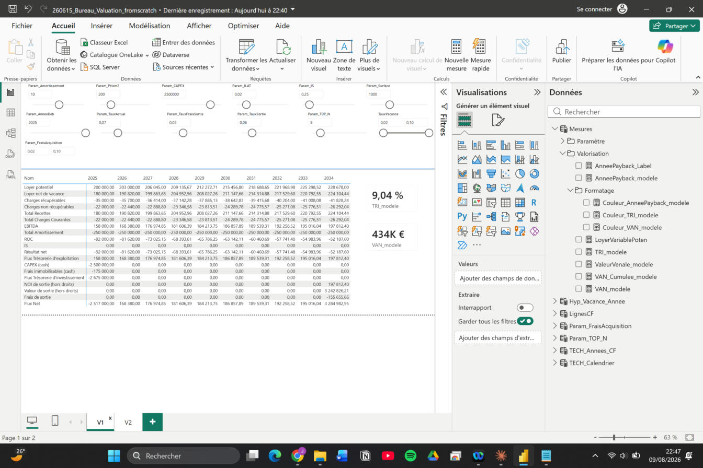

Aperçu du tableau de bord


Le rapport est pilotable en direct (sliders ILAT, taux d'actualisation, vacance, etc.).
Une démo interactive est disponible sur demande —
écrivez-moi.
Données affichées
Jeu de données entièrement fictif ("Immeuble de bureaux fictif — Île-de-France"). Aucune donnée client ou de mandat réel.